Vercel
Last week I wrote about First Steps Using Cloudflare Pages.
Vercel is another leader in the trend toward static hosting, serverless, and edge compute.
jldec.fun 🤪
This is a walkthrough of how I deployed jldec.fun using the Vercel platform.
Markdown source files live in the same repo on GitHub as before.
The Vercel signup starts a New Project workflow (this could be simplified.)
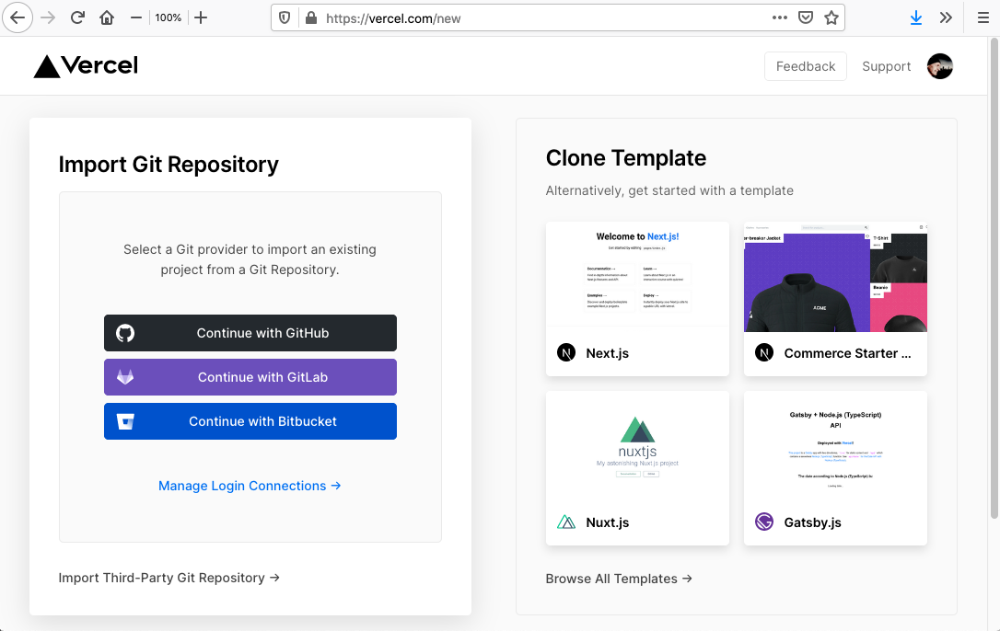
I clicked on 'Continue with GitHub', and then chose the first option in the dropdown below.
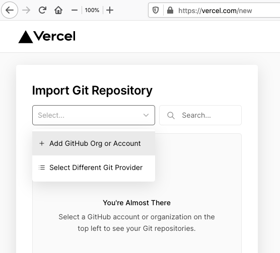
This led to the GitHub form for granting repo access to the 'Vercel' GitHub app. (Look for it later in your GitHub Settings to add more repos, or to revoke access.)
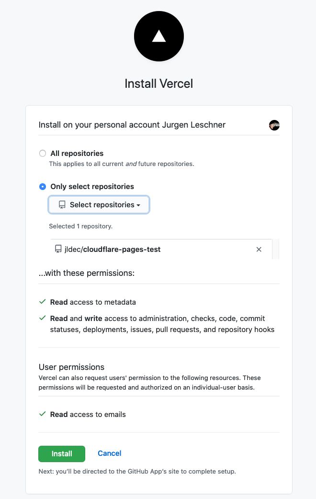
Back on Vercel, I selected my repo and used my 'Personal Account' scope. Team scope requires a paid plan.
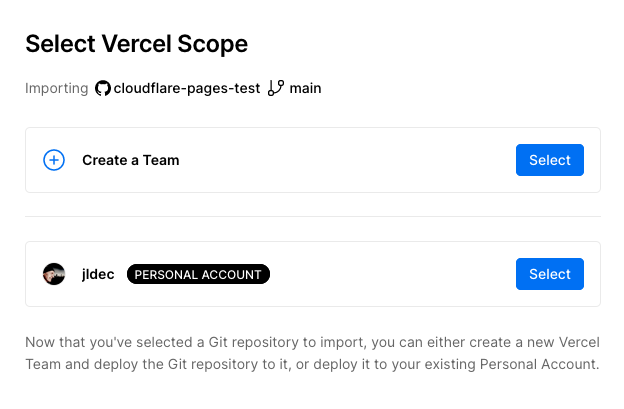
I continued with the default (root) project directory within the repo.
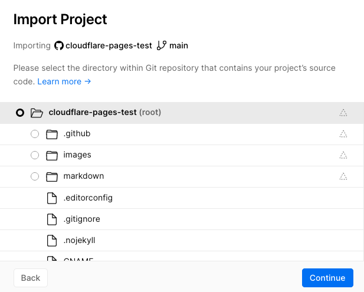
In the last form of the Import Project flow, Project Name defaults to the name of the repo, so I changed that to 'jldec-fun'. I also configured a build command and an output directory.
I didn't really need encrypted environment variables here, but this step doesn't offer an alternative, so I made a note to change it later.
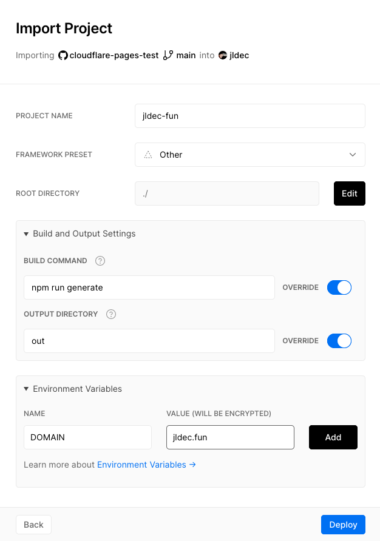
Submitting the form triggered the first build, followed by a nice confetti shower. 🎉
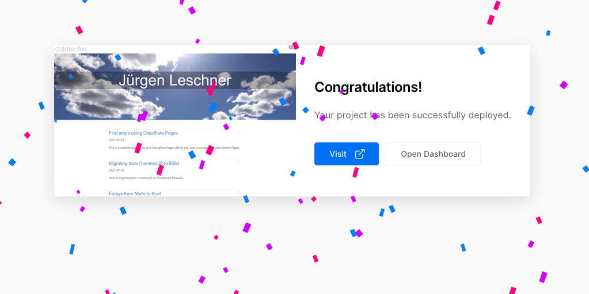
Unfortunately, visiting the site revealed a problem. Vercel does not automatically serve files stored with an '.html' extension, when a request comes in without any extension.
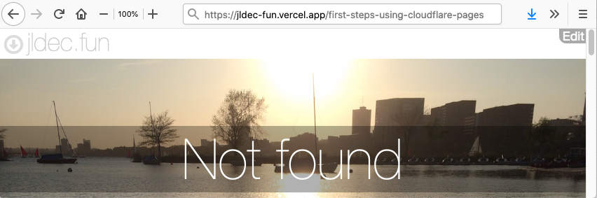
The fix requires cleanUrls to be set in the vercel.json file at the project root.
{
"cleanUrls": true
}
Adding this setting fixed my 404 problem.
The same config file would also be useful for other common static hosting requirements like redirects, HTTP headers, and the treatment of URLs with a trailing slash.
Back in the well-designed Vercel Settings UI, I was able to change my environment variables to plaintext. I liked the ability to set different values for preview builds.
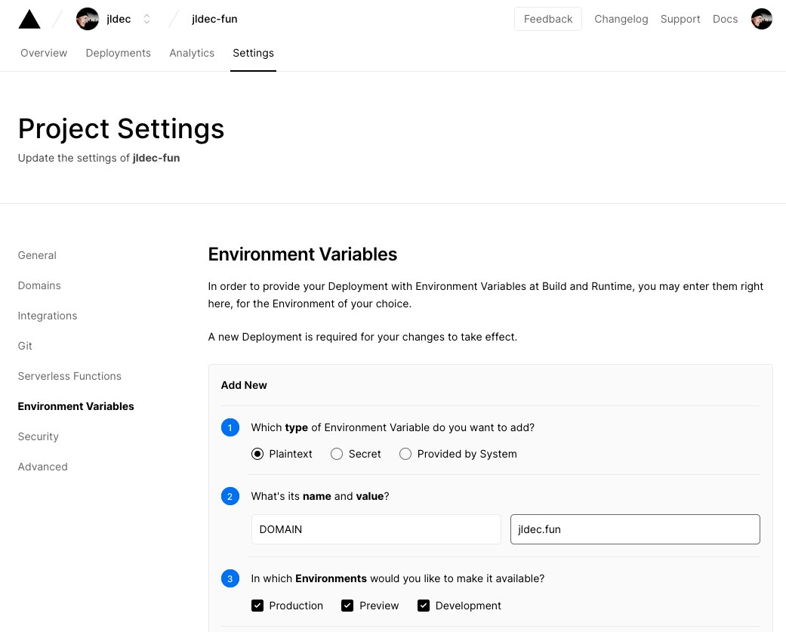
When I added my domain name, the form helpfully recommended configuring an IP address.
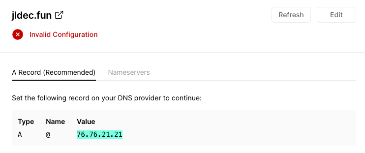
Once the DNS record was in place, the domain configuration changed to 'Valid'.
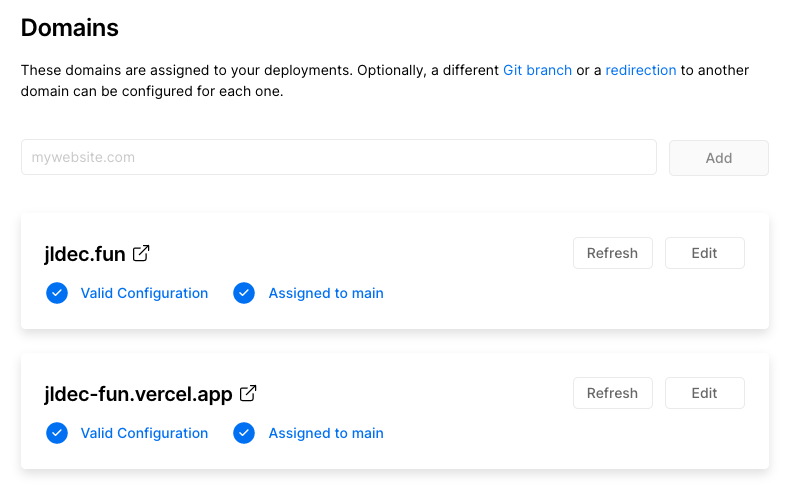
Tada!
jldec.fun is deployed from the main branch on GitHub. Commits to any other branch will trigger a preview deployment on a different URL.
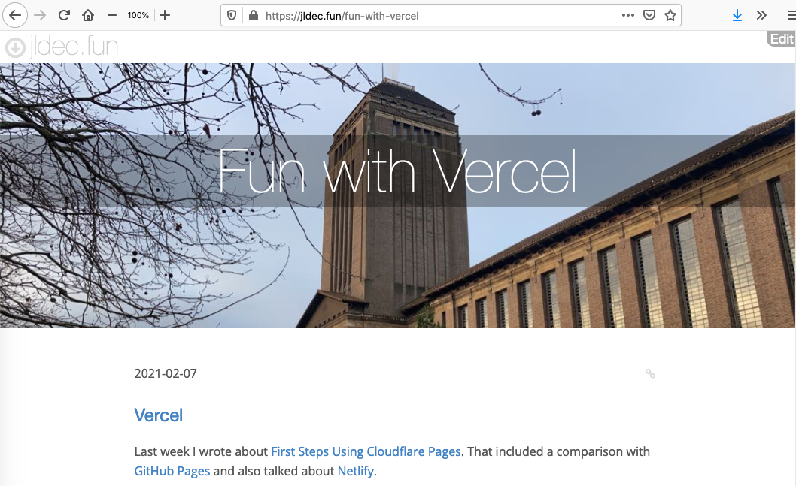
Static websites are awesome!
To leave a comment
please visit dev.to/jldec
powered by pub-server and pub-theme-pubblog